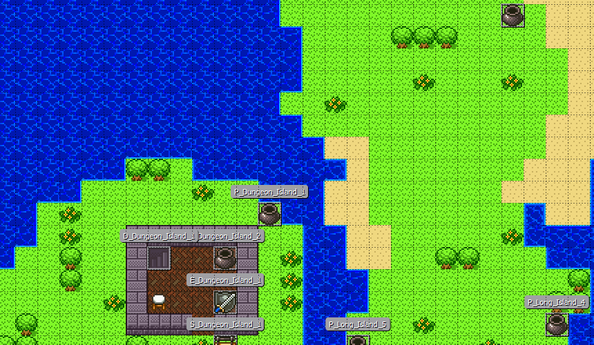

Étienne Letarte
Programmeur
Speak English? Click here.
Mes projets
| Gestion des vendredis
Cégep de Sherbrooke |
Application mobile WallStories
Quinco & Cie |
|
|---|---|---|
|

En 2020, pendant ma Technique de l'informatique, j'ai dû, dans une équipe de 4, livrer un logiciel pour une vraie entreprise. Un de mes coéquipiers était employé au au Séminaire de Sherbrooke, et ceux-ci avaient besoin d'un système pour gérer les activités du vendredi de leurs élèves. Notre logiciel, codé en PHP (Laravel), permettait de faire une gestion d'horaire, de localiser des covoitureurs, et de discuter avec eux dans le site web. |

En 2021, lorsque j'étais programmeur chez Quinco & Cie, j'ai dû contribuer à leur nouvelle application mobile nommée WallStories. Les clients achètent un autocollant WallStories en magasin, et le colle à un mur de de la maison. Ensuite, ils téléchargent l'app et activent le sticker avec son code d'activation. Le sticker se met à s'animer sur le mur en utilisant Vuforia, une technologie de réalité augmentée. J'ai contribué au contenu de l'application, et j'ai livré une mise à jour en fin 2021. |
|
| PHP Laravel OpenMap Twilio Gestion | Unity3D (C#) Mobile AssetBundles | |
| Aerodynamic
Collège Bart |
Projet de JRPG
Collège Bart |
|

Au collège Bart, chaque élève avait un projet à faire qui était sensé émuler une production complète, mais nous n'avions que 2 sessions (25 semaines) pour le compléter. Mon projet, Aerodynamic, est un platformer basé sur la physique qui demande une grande précision au joueur. Celui-ci peut bouger les bras du personnage avec la souris et se déplacer avec WASD. Ce fut ma première expérience de programmation d'un jeu-vidéo complet. |
desc |
|
| Unity 3D (C#) Hinge Joints Physics-based | Unity 2D (C#) Queues Grid-based Tiled |